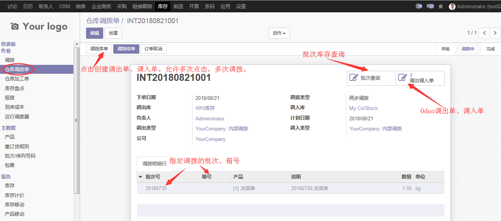
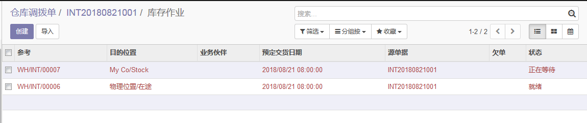
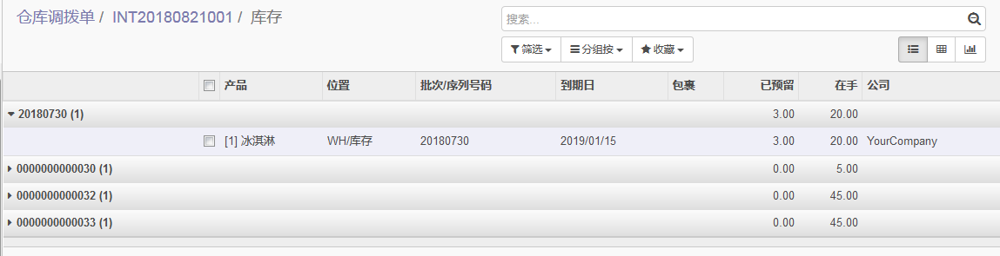

<section class="oe_container">
    <div class="oe_row oe_spaced">
        <h2 class="oe_slogan" style="color:#875A7B;">仓库调拨</h2>
        <h4 class="oe_slogan"><ul align='left' ><ol>1. 应用场景：<br/>
    仓内调拨：Odoo现有功能中，调拨单是直接从源库位调拨到目标库位，仓内调拨（例如，存储位置优化），这样是OK的，也很方便。<br/>
    跨仓调拨：跨仓调拨的情况，就不能直接从源库位调拨到目标库位了。这里涉及几个问题，其一是，在途库存管理：如果在途时间较长，希望知道在途库存有多少；
    其二是调出仓、运输方、接收仓责任区分问题。如果接收时候发现货物错误，调出仓、运输方、接收仓，谁的责任？<br/>
    两步调拨：本模块解决跨仓调拨问题，新建调拨单，输入要调出仓、调入仓，调拨类型（一步调拨、两步调拨），调拨货物明细，系统自动生成Odoo调拨单。
    如果是两步调拨，系统生成两个Odoo调拨单，一个从源库位到在途库位的调出单，一个从在途库位到目的库位的调入单。<br/>
    按批次箱号调拨：调拨明细上可以指定批次、箱号，生成Odoo调拨单时候，自动按指定的批次、箱号锁货。系统提供一键批次库存查询功能。
    </ol>
</ul></h4>
</section>
<section class="oe_container">
    <div class="oe_row oe_spaced">
        <h2 class="oe_slogan" style="color:#875A7B;">功能截图</h2>
        <h3 class="oe_slogan">仓库调拨单</h3>
        <div class="oe_span6">
            <div class="oe_demo oe_picture oe_screenshot">
                
            </div>
        </div>
        <h3 class="oe_slogan">调出、调入单</h3>
        <div class="oe_span6">
            <div class="oe_demo oe_picture oe_screenshot">
                
            </div>
        </div>
        <h3 class="oe_slogan">批次库存查询</h3>
        <div class="oe_span6">
            <div class="oe_demo oe_picture oe_screenshot">
                
            </div>
        </div>

    </div>
</section>

